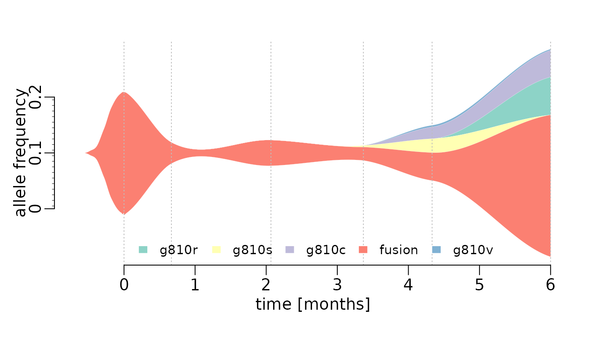

streamgraph.RmdLevel: Advanced
This shows how to create a stream graph using base R, such as the one in Figure 1B (Solomon et al. 2020). The graph shows the allele frequencies of a founder fusion mutation and G810 substitution mutations that emerged over time.

library(data.table)
dates <- as.Date(c("2018-3-9","2018-3-29","2018-5-10","2018-6-18","2018-7-17","2018-9-5"))
fusion <- data.frame(date=dates,vaf=c(22.1,3.8,4.6,2.4,5,25.4),var="fusion")
G810R <- data.frame(date=dates,vaf=c(0,0,0,0,0,6.8),var="G810R")
G810C <- data.frame(date=dates,vaf=c(0,0,0,0,2.1,4.8),var="G810C")
G810V <- data.frame(date=dates,vaf=c(0,0,0,0,0.3,0.2),var="G810V")
G810S <- data.frame(date=dates,vaf=c(0,0,0,0.3,2.5,0),var="G810S")
#lets make this one big data frame, so we have an easier time
y <- data.table(g810r=G810R$vaf,g810s=G810S$vaf,g810c=G810C$vaf,fusion=fusion$vaf,g810v=G810V$vaf,date=dates)
#take a look
head(y)## g810r g810s g810c fusion g810v date
## 1: 0.0 0.0 0.0 22.1 0.0 2018-03-09
## 2: 0.0 0.0 0.0 3.8 0.0 2018-03-29
## 3: 0.0 0.0 0.0 4.6 0.0 2018-05-10
## 4: 0.0 0.3 0.0 2.4 0.0 2018-06-18
## 5: 0.0 2.5 2.1 5.0 0.3 2018-07-17
## 6: 6.8 0.0 4.8 25.4 0.2 2018-09-05
plotStreamGraph <- function(data=stop("No data, NO PLOT, also no cape!"), smoothed=TRUE, start=TRUE, dates="date", colors=NULL, span=0.6){
require(data.table)
data <- data.table(data)
#lets check first, if there is a date column in there
if (! dates %in% colnames(data)){
#well this is a problem
#maybe check if there is a date type column in there?
date_columns <- which(lapply(data,class) == "Date")
if(length(date_columns) == 0){
#well without dates, we will have to assume the measurements are unidistant
data$TotalDays <- as.integer(c(0:(nrow(data)-1))*30)
}else{
#we just take the first one and be happy
dates <- names(date_columns[1])
data$TotalDays <- as.integer(unlist(data[,..dates]-c(data[1,..dates])))
}
}else{
# check if this is actually a date
#TODO
#and then convert this to actually usable x values by substracting the first value from all the others
# TODO: sorting?
#we set this as interger, so we can later exclude it easier
data$TotalDays <- as.integer(unlist(data[,..dates]-c(data[1,..dates])))
}
#now that this is sorted we get to the good part
if(smoothed){
#fit a loess model with each column
#but only keep numerical columns
keep <- which(lapply(data,class)=="numeric")
loess_list <- lapply(data[,..keep], function(x) loess(unlist(x)~data$TotalDays,span=span))
#now we interpolate for all days between the the measurements
interpSteps <- seq(from=data$TotalDays[1], to=data$TotalDays[nrow(data)])
interpData <- data.frame(lapply(loess_list, function(x) predict(x, interpSteps)))
#now negative occurances do not make sense with this
interpData[interpData<0] <- 0
plotData <- interpData
plotX <- interpSteps
}else{
#if there is no smoothing, we just copy the raw data
plotData <-data[,..keep]
plotX <- data$TotalDays
}
# now we also need and X value for each point
if(start){
if(smoothed){
#now this is a bit of a hassle
#first we create a general outline of the way the thing should run
# we basically simulate a decay function
startValues <- data.frame(matrix(c(rep(0,ncol(plotData)), # 0 is the endpoint
plotData[1,]/91,
plotData[1,]/27,
plotData[1,]/9,
plotData[1,]/3,
plotData[1,]*0.8,
plotData[1,]*0.9,
plotData[1,]),
byrow = TRUE, nrow=8)) #and we have 8 time points to consider
#this is our backbone and now we smooth this,
loess_list <- lapply(startValues, function(x) loess(unlist(x)~c(1:nrow(startValues))))
#here we just interpolate a lot of points in between
smooth_start <- as.data.frame(lapply(loess_list, function(x) predict(x,seq(from=1,to=nrow(startValues),by=0.1))))
#find out the first time 0 appears and set everything to 0 afterwards
smooth_start <- apply(smooth_start, 2, function(x) {
x[c(1:max(which(x<=0)))] <- 0
return(x)
})
#now we combine the start with the actual data
colnames(smooth_start) <- colnames(plotData)
#now you trim a bit of, so the breakpoint is not as obvious
smooth_start <- head(smooth_start,n=-2)
#and then average over the breakpoint
breakIndex <- nrow(smooth_start)
smooth_start[breakIndex-2,] <- colMeans(rbind(tail(smooth_start,3),plotData[c(1),]))
smooth_start[breakIndex-1,] <- colMeans(rbind(tail(smooth_start,2),plotData[c(1,2),]))
smooth_start[breakIndex,] <- colMeans(rbind(tail(smooth_start,1),plotData[c(1,2,3),]))
#now we combine that into one
plotData <- rbind(smooth_start, plotData)
#and obviously add some more xValues that need to be plotted
startX <- rev(seq(from=-0.1,by=-0.3, length.out=nrow(smooth_start)))
plotX <- c(startX, plotX)
}else{
#just connect everything with the 0 line
zeroes <- rep(0,ncol(plotData))
names(zeroes) <- colnames(plotData)
plotData <- rbind(t( zeroes), plotData)
plotX <- c(-15,plotX)
}
}else{
#no start means no work :)
}
# now for the plotting
if(is.null(colors)){
require(RColorBrewer)
colors <- RColorBrewer::brewer.pal(ncol(plotData),"Set3")
}
plotData <- as.data.frame(plotData)
#we change the margins a bit and move the axis to where we want.
oldpar <- par(c("mar","mgp","cex"))
par(mar=c(5.1,2.9,2.1,1.1),mgp=c(1.4,0.5,0),cex=1.2)
#then we plot the data.
.plot.stream(plotX, plotData, axes=FALSE, xlim=c(min(plotX), max(plotX)), center=TRUE, spar=0, frac.rand=0, col=colors, border="white", lwd=0.1, xlab="", ylab="allele frequency")
title(xlab="time [months]", mgp=c(1.5,1,0))
#add in the horizontal lines to show when the real data was taken
for(pos in data$TotalDays){
abline(v=pos, lty=3, col="grey")
}
# this is the y axis, but in ruler style with small ticks
axis(2,at=c(-10,0,10), labels= c(0,0.1,0.2), line=0.1)
rug(x = -10:9 + 0.5, ticksize = -0.01, side = 2, line=0.1)
#now this is the xaxis
axis(1,at=seq(from=0,to=data$TotalDays[nrow(data)],by=30),labels=seq(from=0,to=data$TotalDays[nrow(data)]/30))
#and of course we add a legend
legend("bottom", legend=colnames(plotData), fill=colors, border="white",bty="n", ncol=min(nrow(data),ncol(plotData)), cex= 0.8)
par(oldpar)
}
.plot.stream <- function(
x, y,
order.method = "as.is", frac.rand=0.1, spar=0.2,
center=TRUE,
ylab="", xlab="",
border = NULL, lwd=1,
col=rainbow(length(y[1,])),
ylim=NULL,
...
){
if(sum(y < 0) > 0) error("y cannot contain negative numbers")
if(is.null(border)) border <- par("fg")
border <- as.vector(matrix(border, nrow=ncol(y), ncol=1))
col <- as.vector(matrix(col, nrow=ncol(y), ncol=1))
lwd <- as.vector(matrix(lwd, nrow=ncol(y), ncol=1))
if(order.method == "max") {
ord <- order(apply(y, 2, which.max))
y <- y[, ord]
col <- col[ord]
border <- border[ord]
}
if(order.method == "first") {
ord <- order(apply(y, 2, function(x) min(which(r>0))))
y <- y[, ord]
col <- col[ord]
border <- border[ord]
}
bottom.old <- x*0
top.old <- x*0
polys <- vector(mode="list", ncol(y))
for(i in seq(polys)){
if(i %% 2 == 1){ #if odd
top.new <- top.old + y[,i]
polys[[i]] <- list(x=c(x, rev(x)), y=c(top.old, rev(top.new)))
top.old <- top.new
}
if(i %% 2 == 0){ #if even
bottom.new <- bottom.old - y[,i]
polys[[i]] <- list(x=c(x, rev(x)), y=c(bottom.old, rev(bottom.new)))
bottom.old <- bottom.new
}
}
ylim.tmp <- range(sapply(polys, function(x) range(x$y, na.rm=TRUE)), na.rm=TRUE)
outer.lims <- sapply(polys, function(r) rev(r$y[(length(r$y)/2+1):length(r$y)]))
mid <- apply(outer.lims, 1, function(r) mean(c(max(r, na.rm=TRUE), min(r, na.rm=TRUE)), na.rm=TRUE))
#center and wiggle
if(center) {
g0 <- -mid + runif(length(x), min=frac.rand*ylim.tmp[1], max=frac.rand*ylim.tmp[2])
} else {
g0 <- runif(length(x), min=frac.rand*ylim.tmp[1], max=frac.rand*ylim.tmp[2])
}
fit <- smooth.spline(g0 ~ x, spar=spar)
for(i in seq(polys)){
polys[[i]]$y <- polys[[i]]$y + c(fit$y, rev(fit$y))
}
if(is.null(ylim)) ylim <- range(sapply(polys, function(x) range(x$y, na.rm=TRUE)), na.rm=TRUE)
plot(x,y[,1], ylab=ylab, xlab=xlab, ylim=ylim, t="n", ...)
for(i in seq(polys)){
polygon(polys[[i]], border=border[i], col=col[i], lwd=lwd[i])
}
}Solomon, Benjamin J., Lavinia Tan, Jessica J. Lin, Stephen Q. Wong, Sebastian Hollizeck, Kevin Ebata, Brian B. Tuch, et al. 2020. “RET Solvent Front Mutations Mediate Acquired Resistance to Selective RET Inhibition in RET-Driven Malignancies.” Journal of Thoracic Oncology 15 (4): 541–49. https://doi.org/10.1016/j.jtho.2020.01.006.